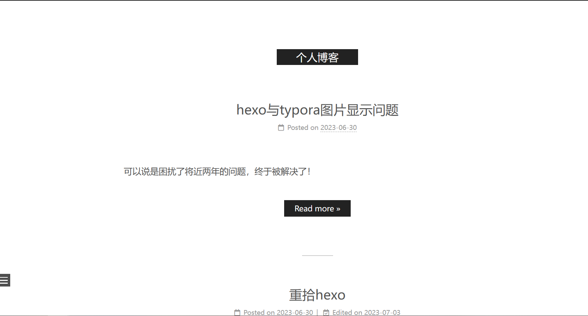

重拾hexo
一年半
2023.06.29
来历
从零（×）开始搭建个人博客

目前的样子，貌似是21.12.25做的，后来就没怎么管过，现在已经完全忘记怎么做的了，那个视频也没有保存（悲
这个样式现在看来也不是那么好看了
所以，这个暑假要重新做一个博客！
第一步：准备工作，安装nodejs，git，hexo
安装两个时都需要注意勾选添加进PATH
使用命令
1 | npm install -g hexo-cli |
来安装hexo
安装后，在合适位置创建你的博客文件夹，进入文件夹，右键进入git bash，使用如下命令
1 | hexo init |
初始化hexo，然后就会看到初始化的一些文件夹和文件。
1 | hexo g |
在浏览器输入localhost:4000即可在本地看到博客网页了。
第二步：创建github仓库，并添加ssh公钥。
创建一个“你的用户名.github.io”的仓库，只有这样，将来要部署到GitHub page的时候，才会被识别。
打开设置，ssh，将公钥全部复制进去即可。
ssh密钥是什么
ssh是一种远程登录服务器的一种方式，密钥则是ssh的安全验证，通过创建私人密钥和公用密钥来实现登录验证。
密钥验证登录
- 客户端生成公钥和私钥，将公钥提前部署在服务器上。
- 客户端发起连接请求。
- 服务器随机生成一个字符串，用本地的公钥加密，发送给客户端。
- 客户端通过私钥解密，将解密后的字符串发送给服务器。
- 服务器验证本地字符串和客户端发来的字符串的一致性，如果通过，则认证成功。
如何生成ssh密钥
windows上在git bash通过命令
1 | ssh-keygen -t rsa -C "youremail" |
来生成密钥
以下是来自微软官方的解释创建 SSH 密钥对的详细步骤 - Azure Virtual Machines | Microsoft Learn

youremail是git保存的邮箱，具体见下述链接如何配置 Git 用户名和邮件地址 - 知乎 (zhihu.com)
这时候会在user文件夹下生成一个.ssh文件夹，里面包含了私钥和公钥，公钥相比私钥包含了.pub后缀名。
第三步：将hexo部署到github
首先配置hexo的配置文件。进入博客文件夹，打开_config.yml，到最后，修改deploy块为
1 | deploy: |
然后安装deploy-git，即部署要用的命令。
在cmd中输入
1 | npm install hexo-deployer-git --save |
然后
1 | hexo clean |
其中hexo clean，即清除之前生成的东西。
hexo g为hexo generate，即根据你博客这个文件夹生成静态网页。
hexo d为hexo deply，即将博客部署到github
以后更新博客时用到的就是这三个命令。
可以在http://yourname.github.io看到你的博客了（更新会有延迟）。
结语
今天主要参考hexo史上最全搭建教程 - JS脚本 - 博客园 (cnblogs.com)
正好摸鱼要下班了，明天更新hexo的配置、主题等内容。
2023.06.30
今天写一写hexo的配置，官网Hexo
发现hexo官网就有详细的安装、建站、部署教程，突然感觉昨天找了那么久的教程是浪费时间。
先放版本Hexo-6.0，Next-8.17.1，后续版本文件结构可能会有变化

图片资源显示问题
在昨天写这个博客的时候，我就隐隐约约记得博客的图片显示貌似有点问题。今天看了官网的教程和搜了一下“typora与hexo”后，我大概明白了问题所在。
主要矛盾在于相对路径的不统一。
在使用typora插入图片时，通常采用相对路径的方式，例如在blog文件夹下，有“重拾hexo.md”文件和同名文件夹，同名文件夹中存放该md文件的图片，那么在typora引用该文件时，可以采用该方式：
1 |  |
而在hexo中，官方给出的嵌入图片方式如图

其中post_asset_folder为true时，hexo会在创建文章时自动生成同名文件夹，听起来似乎和typora相性很好，但是实际上，后面的例子说明，资源图片会被自动解析为其对应文章的路径，即在上个例子中，
1 |  |
即可在hexo中显示图片，但是这在本地typora预览时图片却是不可见的，这就是矛盾之处。
主题选择
yilla用的有点腻了，而且越发觉得观感有问题，没有（一直显示的）目录，文章栏过大等等，决定换一个用用。
先选择了next这个比较广为人知的，遇到问题好解决。
1 | git clone https://github.com/next-theme/hexo-theme-next themes/next |
安装next
这是目前的样子，接下来进行改造。
四个样式预览
muse

mist

Pisces

Gemini
好像和Pisecs差不多，就不放图了
改造部分
主要参照Hexo+Next主题搭建个人博客+优化全过程（完整详细版） - 知乎 (zhihu.com)和Hexo-NexT以及Hexo+Next主题优化 - 知乎 (zhihu.com)
目前修改项有：
1.切换样式为Pisces
2.菜单增加关于、标签、归档，并添加数字
3.修改文章间距线宽度和长度，添加边框阴影
4.右上角增加github
5.菜单增加github链接和Email
6.网站底“小红心”改为“by”，”由”“强力驱动“改为“Thanks”，去除样式提示，修改字体颜色。
7.增加文章字数提示
8.打开底部tag_icon
9.代码块高亮主题修改（未成功）
10.添加背景图
11.添加评论
12.菜单栏和侧边栏修改透明度、添加阴影和圆角
13.添加头像
已知问题：代码高亮主题修改报错，大概是路径斜杠问题

Ubuntu + Hexo + Next 8.0 进阶美化篇二 - 知乎 (zhihu.com)
目前的样子

后面可能会单独出一篇美化教程。